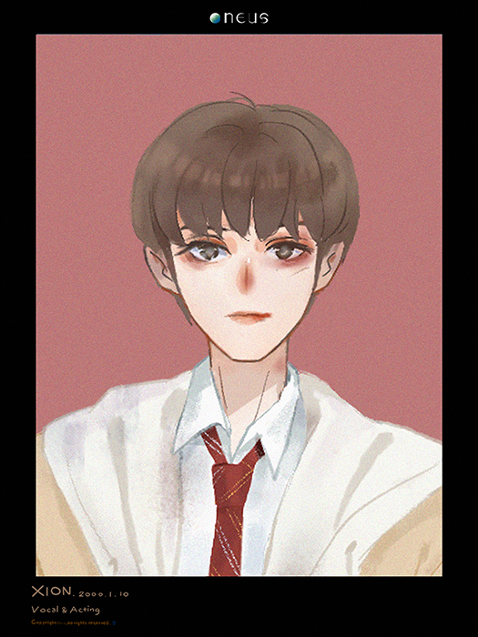

Xion

손동주 (孫東柱) / Son Dong-Ju
生日：2000年1月10日
国际：大韩民国
学历：
Earth School（就读中）
兴趣爱好：看音乐剧
特长：演技，逗哥哥
家庭状况：双胞胎哥哥 东明
别名：둥둥이（东东）, 손시온/손숀（孙西柚）, 동동주（东东柱 [从小学时就开始有的外号，曾经因为太讨厌这个外号想过改名]）
TMI
1. 拥有天才般的大脑而破格跳级，与吕焕雄、李建熙同班，
自小以成为演员为目标成长，虽然年龄还小，但意外地从没被欺负过，
小道消息称孙东柱曾被堵在小巷子，但很快一个人完好无损地走了出来。
2. 双胞胎哥哥孙东明是学校音乐社外援，后对音乐感兴趣，并加入音乐社，
凭借出色的学习能力和刻苦勤奋，很快在社员中脱颖而出，成为后备主唱。
3. 一开始对经常示好的金建学学长十分苦恼，但一年多的相处过后，
不但习惯与金建学相处，甚至能够非常自然地亲近，特长是“面无表情地咬金建学”。
4. 最近迷上手工制作和妖娆花，喜欢给亲近的人画上迪士尼服化道，
是小有名气的美妆博主和手工博主，最新的作品是手工皂。